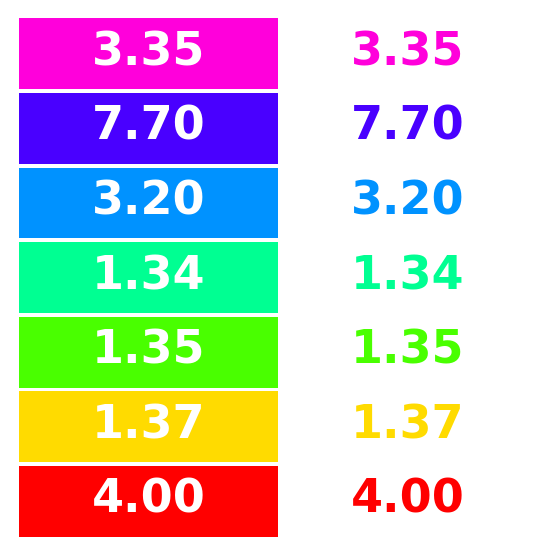

from colorspace import rainbow, desaturate, swatchplot, palette
# Draw 5 colros from the infamous RGB rainbow
col_rainbow = rainbow()(5)
col_rainbow['#FF0000', '#CCFF00', '#00FF66', '#0066FF', '#CC00FF']Documentation built with Python 3.11.10, pyp2qmd 0.1.1 and quarto 1.5.57 on GitHub.
The colorspace package provides several color manipulation utilities that are useful for creating, assessing, or transforming color palettes, namely:
desaturate: Desaturate colors by chroma removal in HCL space.lighten and darken: Algorithmically lighten or darken colors in HCL and/or HLS space.adjust_transparency and extract_transparency to remove, adjust, and extract the transparency.contrast_ratio to compute and visualize W3C contrast ratios of colors.max_chroma to calculate maximum chroma for given hue and luminance in HCL space.compare_colors to compare if two sets of colors are (nearly) equal.Desaturation should map a given color to the gray with the same “brightness”. In principle, any perceptually-based color model (HCL, HLS, HSV, …) could be employed for this but HCL works particularly well because its coordinates capture the perceptual properties better than most other color models.
The desaturate function converts any given hex color code to the corresponding HCL coordinates and sets the chroma to zero. Thus, only the luminance matters which captures the “brightness” mentioned above. Finally, the resulting HCL coordinates are transformed back to hex color codes.
For illustration, a few simple examples are presented below. More examples in the context of palettes for statistical graphics are discussed along with the color vision deficiency article.
from colorspace import rainbow, desaturate, swatchplot, palette
# Draw 5 colros from the infamous RGB rainbow
col_rainbow = rainbow()(5)
col_rainbow['#FF0000', '#CCFF00', '#00FF66', '#0066FF', '#CC00FF']['#7F7F7F', '#EDEDED', '#DDDDDD', '#727272', '#7C7C7C']# Compare the two color palettes
swatchplot([palette(col_rainbow, name = "original"),
palette(col_desat, name = "desaturated")],
figsize = (8, 1.5));Even this simple example suffices to show that the three RGB rainbow colors have very different grayscale levels. This deficiency is even clearer when using a full color wheel (of colors with hues in [0, 360] degrees). While the RGB rainbow is very unbalanced the HCL rainbow_hcl (or also qualitative_hcl) is (by design) balanced with respect to luminance.
from matplotlib import pyplot as plt
from colorspace import rainbow, rainbow_hcl, desaturate
from numpy import repeat
def wheel(ax, col): ax.pie(repeat(1, len(col)), colors = col, labels = range(len(col)))
col = rainbow()(8)
col_hcl = rainbow_hcl()(8)
fig, axes = plt.subplots(2, 2, figsize = (8, 8))
wheel(axes[0, 0], col)
wheel(axes[0, 1], desaturate(col))
wheel(axes[1, 0], col_hcl)
wheel(axes[1, 1], desaturate(col_hcl))
fig.tight_layout()
plt.show()In principle, a similar approach for lightening and darkening colors can be employed as for desaturation above. The colors can simply be transformed to HCL space and then the luminance can either be decreased (turning the color darker) or increased (turning it lighter) while preserving the hue and chroma coordinates.
This strategy typically works well for lightening colors, although in some situations the result can be rather colorful. Conversely, when darkening rather light colors with little chroma, this can result in rather gray colors.
In these situations, an alternative might be to apply the analogous strategy in HLS space which is frequently used in HTML style sheets. However, this strategy may also yield colors that are either too gray or too colorful. A compromise that sometimes works well is to adjust the luminance coordinate in HCL space but to take the chroma coordinate corresponding to the HLS transformation.
We have found that typically the HCL-based transformation performs best for lightening colors and this is hence the default in lighten. For darkening colors, the combined strategy often works best and is hence the default in darken. In either case it is recommended to try the other available strategies in case the default yields unexpected results.
Regardless of the chosen color space, the adjustment of the L component can occur by two methods, relative (the default) and absolute. For example L - 100 * amount is used for absolute darkening, or L * (1 - amount) for relative darkening. See lighten and darken for more details.
For illustration a qualitative palette (Okabe-Ito) is transformed by two levels of both lightening and darkening, respectively.
from colorspace import palette, swatchplot, lighten, darken
oi = ["#61A9D9", "#ADD668", "#E6D152", "#CE6BAF", "#797CBA"]
swatchplot([palette(lighten(oi, 0.4), "-40%"),
palette(lighten(oi, 0.2), "-20%"),
palette(oi, "0%"),
palette(darken(oi, 0.2), "+20%"),
palette(darken(oi, 0.4), "+40%")],
figsize = (5.5, 3));Alpha transparency is useful for making colors semi-transparent, e.g., for overlaying different elements in graphics. An alpha value (or alpha channel) of 0 (or 00 in hex strings) corresponds to fully transparent and an alpha value of 1 (or FF in hex strings) corresponds to fully opaque. If a color hex string does not provide an explicit alpha transparency, the color is assumed to be fully opaque.
Currently the package only allows to manipulate the transparency of objects inheriting from colorlib.colorobject (see Color Spaces).
The adjust_transparency function can be used to adjust the alpha transparency of a set of colors. It always returns a hex color specification. This hex color can have the alpha transparency added/removed/modified depending on the specification of the argument alpha. The function returns an object of the same class as provided on x with (possibly) adjusted transparency.
alpha = None existing transparency will be removed (if any exists).x.numpy.ndarray is provided the length of the object must match the number of colors of the object provided on x. All elements of the list/array must be convertable to float and must be in \(\in [0., 1.]\).For illustration, the transparency of a single black color is modified to three alpha levels: fully transparent, semi-transparent, and fully opaque, respectively. Black can be equivalently specified by name ("black"), hex string ("#000000"), or integer position in the standard palette ("0").
from colorspace.colorlib import hexcols
from colorspace import adjust_transparency
cols = hexcols(["black", "#000000", "0"])
print(cols)hexcols color object (3 colors)
hex_
1: b'#000000'
b'#000000'
b'#000000'hexcols color object (3 colors)
hex_ alpha
1: b'#000000' 00
b'#000000' 7F
b'#000000' FFSubsequently we can set a constant transparency for all colors by providing one single value, or remove transparency information by setting alpha = None. Given the same object as above:
from colorspace import extract_transparency
cols = adjust_transparency(cols, 0.8) # Set to constant
print(cols)hexcols color object (3 colors)
hex_ alpha
1: b'#000000' CC
b'#000000' CC
b'#000000' CChexcols color object (3 colors)
hex_
1: b'#000000'
b'#000000'
b'#000000'The extract_transparency function can be used to extract the alpha transparency from a set of colors. It allows to define the mode of the return value. This can either be float (\(\in [0., 1.]\)), int (\({0, 1, ..., 255}\)), or str ("00", "01", …, "FF"). In case no transparency is defined at all, None will be returned.
For illustration we extract the transparency from the gray colors in x in different formats.
The Web Content Accessibility Guidelines (WCAG) by the World Wide Web Consortium (W3C) recommend a contrast ratio of at least 4.5 for the color of regular text on the background color, and a ratio of at least 3 for large text. See . This relies on a specific definition of relative luminances (essentially based on power-transformed sRGB coordinates) that is different from the perceptual luminance as defined, for example, in the HCL color model. Note also that the WCAG pertain to text and background color and not to colors used in data visualization.
For illustration we compute and visualize the contrast ratios of the default palette in R compared to a white background.
from colorspace import rainbow, contrast_ratio
cols = rainbow().colors(7)
contrast_ratio(cols, "#FFFFFF") # Against whitearray([3.99847677, 1.36500073, 1.34725121, 1.33595736, 3.20339072,
7.69994138, 3.34666975])array([ 5.252 , 15.38460716, 15.58729349, 15.71906457, 6.55555374,
2.72729349, 6.27489463])
As the possible combinations of chroma and luminance in HCL space depend on hue, it is not obvious which trajectories through HCL space are possible prior to trying a specific HCL coordinate by calling polarLUV. To avoid having to fix up the color upon conversion to RGB hex color codes, the max_chroma function computes (approximately) the maximum chroma possible.
For illustration we show that for given luminance (here: L = 50) the maximum chroma varies substantially with hue:
from colorspace import max_chroma
from numpy import linspace
max_chroma(linspace(0, 360, 7), L = 50)array([137.96, 59.99, 69.06, 39.81, 65.45, 119.54, 137.96])Similarly, maximum chroma also varies substantially across luminance values for a given hue (here: H = 120, green):
from colorspace import max_chroma
from numpy import linspace
max_chroma(H = 120, L = linspace(0, 100, 6))array([ 0. , 28.04, 55.35, 82.79, 110.28, 0. ])In the plots below more combinations are visualized: In the left panel for maximum chroma across hues given luminance and in the right panel with increasing luminance given hue.
from colorspace.colorlib import HCL
from colorspace import max_chroma
import matplotlib.pyplot as plt
import numpy as np
# Setting up the plot
fig, [ax1, ax2] = plt.subplots(1, 2, figsize = (9, 4))
# ----------------------------------------
# C vs. H plot
# ----------------------------------------
H = np.linspace(0, 360, 37, endpoint = True, dtype = "int")
L = np.linspace(30, 90, 4, endpoint = True, dtype = "int")
C = []; Cmax = 0
for i in range(len(L)):
C.append(max_chroma(H, float(L[i])))
Cmax = max(Cmax, max(C[i]))
for i in range(len(L)):
colors = HCL(H, C[i], np.repeat(L[i], len(H))).colors()
ax1.plot(H, C[i], color = "0.5", zorder = 1)
ax1.scatter(H, C[i], c = colors, zorder = 2)
ax1.set_xlim(0, 360)
ax1.set_ylim(0, Cmax * 1.05)
yr = ax1.secondary_yaxis("right")
yr.set_ticks([x[len(x) - 1] for x in C])
yr.set_yticklabels(["L = {:d}".format(x) for x in L])
ax1.set_xlabel("Hue (H)")
ax1.set_ylabel("Maximum chroma (C)")
# ----------------------------------------
# L vs. C plot
# ----------------------------------------
L = np.linspace(0, 100, 21, endpoint = True, dtype = "int")
H = np.asarray([0, 60, 120, 250, 330], dtype = "int")
C = []; Cmax = 0
for i in range(len(H)):
C.append(max_chroma(float(H[i]), L))
Cmax = max(Cmax, max(C[i]))
for i in range(len(H)):
colors = HCL(np.repeat(H[i], len(L)), C[i], L).colors()
ax2.plot(C[i], L, color = "0.5", zorder = 1)
ax2.scatter(C[i], L, c = colors, zorder = 2)
# Setting label
idx = int(np.where(C[i] == max(C[i]))[0][0])
ax2.text(C[i][idx] + Cmax / 15, L[idx], "H = {:d}".format(H[i]),
color = colors[idx], va = "center")
ax2.set_xlim(0, Cmax * 1.20)
ax2.set_ylim(0, 100)
ax2.set_xlabel("Maximum chroma (C)")
ax2.set_ylabel("Luminance (L)")
# Display result
fig.tight_layout()
plt.show()